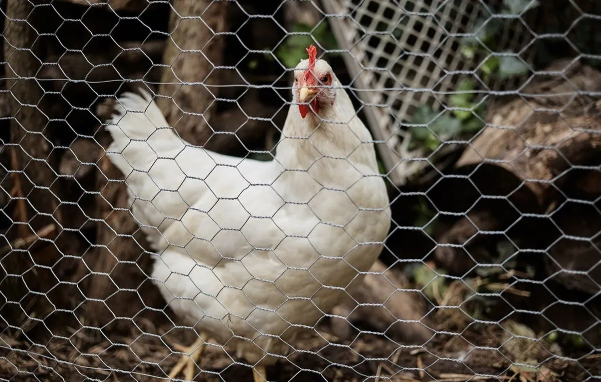

When selecting wire mesh for construction, fencing, or erosion control projects, two products frequently come up: hexagonal wire mesh and gabion mesh. While they may look similar at first glance — both feature the distinctive hexagonal pattern — they serve fundamentally different purposes and are manufactured to different specifications.
Understanding these differences is critical for project success. Choosing the wrong product can lead to structural failures, wasted budget, and costly rework. This guide breaks down everything you need to know to make an informed decision.
What Is Hexagonal Wire Mesh?
Hexagonal wire mesh (commonly known as chicken wire or poultry netting) is a lightweight woven wire netting made from thin steel wire twisted into hexagonal openings. It is typically manufactured from low carbon steel wire (Q195) and available in galvanized or PVC coated finishes.
Key characteristics:
- Wire diameter: 0.4mm to 2.5mm
- Mesh openings: 1/2" to 4"
- Lightweight and flexible
- Easy to cut, shape, and install
- Primarily used for fencing, poultry enclosures, garden protection, and light construction reinforcement

What Is Gabion Mesh?
Gabion mesh (also called gabion box mesh or double-twisted gabion mesh) is a heavy-duty woven wire mesh specifically designed for making gabion baskets and mattresses. It uses thicker wire with a double-twist weaving technique that prevents unravelling if a wire breaks.
Key characteristics:
- Wire diameter: 2.2mm to 4.0mm
- Mesh openings: 60×80mm, 80×100mm, 100×120mm
- Selvedge wire is thicker than mesh wire for edge reinforcement
- Extremely durable with expected lifespan of 50-120 years
- Used for retaining walls, erosion control, hydraulic structures, and flood defence

Key Differences at a Glance
| Feature | Hexagonal Wire Mesh | Gabion Mesh |
|---|---|---|
| Wire Diameter | 0.4–2.5 mm | 2.2–4.0 mm |
| Mesh Opening | 1/2"–4" (12.7–101.6 mm) | 60×80 – 100×120 mm |
| Weaving Method | Single or double twist | Double twist (prevents unravelling) |
| Weight | Lightweight | Heavy-duty |
| Flexibility | Highly flexible, easy to bend | Flexible but rigid when filled |
| Typical Lifespan | 5–20 years | 50–120 years |
| Primary Use | Fencing, poultry, garden | Retaining walls, erosion control |
| Cost | Budget-friendly | Higher initial investment |
| Installation | Simple cutting and stapling | Requires assembly with spirals/lacing wire |
| Load Capacity | Light loads only | Designed for heavy structural loads |
When to Choose Hexagonal Wire Mesh
- Poultry and small animal enclosures
- Garden and crop protection
- Temporary fencing needs
- Plastering and stucco reinforcement
- Light construction applications
- Projects with tight budget constraints
- Situations requiring easy on-site cutting and shaping
When to Choose Gabion Mesh
- Retaining walls and soil stabilization
- Riverbank and coastline erosion control
- Flood defence and levee construction
- Channel linings and hydraulic structures
- Architectural cladding and landscaping features
- Long-term infrastructure projects
- Projects requiring high load-bearing capacity
Can You Use Hexagonal Wire Mesh as Gabion Mesh?
This is a common question. The short answer is: technically possible for very light-duty applications, but not recommended for structural projects.
While both products share the hexagonal pattern, gabion mesh is manufactured to much stricter standards:
- Thicker wire with higher tensile strength (350-550 MPa)
- Double-twist weaving prevents catastrophic unravelling
- Selvedge wires provide critical edge reinforcement
- Tested and certified to international standards (ASTM A975, EN 10223-3)
Using standard hexagonal wire mesh (chicken wire) for gabion applications can result in structural failure, especially in load-bearing or hydraulic scenarios. The thinner wire simply cannot withstand the forces involved.
The difference between hexagonal wire mesh and gabion mesh is not just about wire thickness — it's about engineering standards, structural integrity, and decades of proven performance in demanding conditions.
Not sure which mesh is right for your project? Our engineering team can help you select the optimal specification. Request a Quote